Hướng dẫn sử dụng: Kiểm kê CCDC trên web
Tài liệu giới thiệu phần Kiểm kê công cụ dụng cụ (CCDC) trên web, đi lần lượt qua từng menu, từng tab, từng nút: dùng để làm gì, ai nhìn thấy, bấm vào thì chuyện gì xảy ra, và lúc nào nút bị khoá.
1. Tổng quan
Kiểm kê là đối chiếu tài sản ghi trên sổ với tài sản thực tế. Mỗi lần kiểm là một đợt kiểm kê của một công ty. Kiểm kê không sửa dữ liệu tài sản: kết quả nằm trong các phiếu kiểm kê và báo cáo, còn việc sửa tài sản (nếu cần) làm sau khi đóng đợt.
1.1. Hai cách kiểm: theo vùng và theo nhân viên
| Cách kiểm | Kiểm đồ gì | Ai đi kiểm | Kết quả |
|---|---|---|---|
| Theo vùng | Đồ Chung và đồ Kho đang đặt trong một vùng (phòng, tầng, khu vực, kho) | Người đi kiểm, quét từng tài sản có mặt trong vùng bằng app điện thoại | Chốt vùng thì hệ thống lập phiếu vùng, chia theo nhân viên chuyên môn quản lý nhóm tài sản |
| Theo nhân viên | Đồ Riêng của từng người | Người đi kiểm (thường là hành chính), dùng danh sách đồ Riêng hệ thống lập sẵn cho người đó | Gửi kết quả thì hệ thống lập phiếu cá nhân, người xác nhận là chính người giữ đồ |
1.2. Đồ Chung, đồ Riêng, đồ Kho
Mỗi tài sản có một Loại sử dụng, quyết định nó được kiểm theo cách nào:
| Loại | Nghĩa | Ai đặt | Được kiểm ở đâu |
|---|---|---|---|
| Riêng | Đồ một người dùng riêng (máy tính, điện thoại…) | Hành chính chọn | Kiểm theo nhân viên |
| Chung | Đồ dùng chung của một vùng (máy in, bàn họp…) | Hành chính chọn | Kiểm theo vùng |
| Kho | Tài sản đang nằm trong kho | Hệ thống tự đặt khi tài sản về kho; không chọn tay được | Kiểm theo vùng (vùng kho) |
Cách đánh dấu Chung / Riêng xem ở mục 7.
1.3. Ai làm gì
1.4. Quyền nào thấy menu nào
Ba menu nằm trong nhóm Kiểm kê CCDC ở thanh menu bên trái.
| Menu | Ai thấy | Ghi chú |
|---|---|---|
| Đợt kiểm kê | Người có quyền Xem kiểm kê | Các nút Tạo đợt, Sửa, Huỷ, Bắt đầu kiểm, Đóng đợt chỉ hiện thêm với người có quyền Hành chính CCDC. Người không có quyền này chỉ xem. |
| Báo cáo kiểm kê | Người có quyền Xem kiểm kê | Chỉ xem và xuất Excel. |
| Kiểm kê của tôi | Mọi người đã đăng nhập | Mỗi người chỉ thấy phiếu và đợt của chính mình. |
Lưu ý khi cấp quyền: hành chính cần cả hai quyền Hành chính CCDC và Xem kiểm kê. Thiếu quyền Xem kiểm kê thì không thấy menu Đợt kiểm kê, nên không có chỗ để tạo hay đóng đợt. Người chỉ có quyền Đi kiểm thì làm việc trên app điện thoại và không thấy menu Đợt kiểm kê trên web.
2. Quy trình tổng
Một đợt kiểm kê đi qua 6 bước. Bước 2 (viền đỏ) là bước quan trọng nhất: từ lúc bấm Bắt đầu kiểm tới lúc đóng đợt, toàn bộ tài sản của mọi công ty bị khoá sửa và khoá điều chuyển.
- Tạo đợt (mục 3.2): hành chính chọn công ty, đặt tên, ngày bắt đầu và kết thúc dự kiến. Đợt ở trạng thái Chờ bắt đầu; tài sản chưa bị khoá; còn sửa hoặc huỷ được.
- Bắt đầu kiểm (mục 3.4): đợt chuyển sang Đang mở. Hệ thống khoá tài sản và chụp lại danh sách vùng của công ty, cùng danh sách những người đang giữ đồ Riêng. Hai danh sách này là "việc phải làm" của đợt.
- Đi kiểm trên app điện thoại (mục 8): kiểm từng vùng (đồ Chung, đồ Kho) và từng nhân viên (đồ Riêng). Chốt xong một vùng hoặc gửi xong phần một nhân viên thì hệ thống lập phiếu chờ xác nhận.
- Xác nhận phiếu (mục 6): nhân viên chuyên môn xác nhận phiếu vùng, nhân viên xác nhận phiếu cá nhân của mình, trên web ở menu Kiểm kê của tôi hoặc trên app.
- Đóng đợt (mục 3.7): đợt chuyển sang Đã đóng. Phiếu nào còn chờ thì hệ thống tự xác nhận thay người được giao, và ghi lại nguồn xác nhận là "Hệ thống". Tài sản được mở khoá khi không còn đợt nào đang mở.
- Xem báo cáo (mục 5): tổng quan tiến độ, tài sản thêm vào có cảnh báo, đồ Chung chưa gắn vùng, tình trạng ghi nhận, người không xác nhận; xuất Excel.
3. Menu Đợt kiểm kê
Nơi hành chính lập và điều hành các đợt kiểm kê, và nơi quản lý theo dõi tiến độ từng đợt. Menu nằm ở Kiểm kê CCDC › Đợt kiểm kê.
3.1. Danh sách đợt và bộ lọc
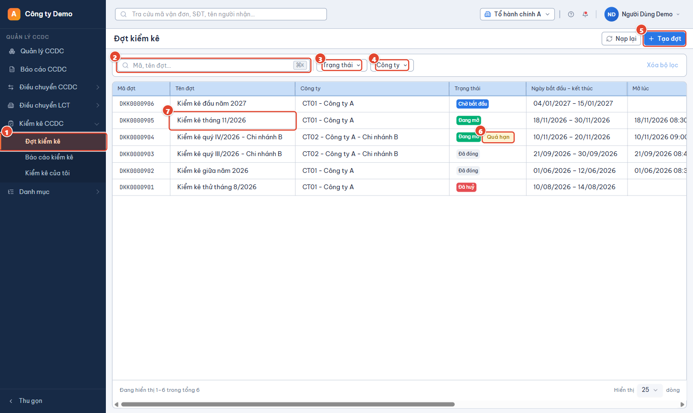
- Menu Đợt kiểm kê trong nhóm Kiểm kê CCDC.
- Ô tìm: gõ mã hoặc tên đợt; không cần gõ dấu.
- Lọc theo Trạng thái: Chờ bắt đầu, Đang mở, Đã đóng, Đã huỷ.
- Lọc theo Công ty.
- Nút Tạo đợt: chỉ hiện với hành chính. Xem mục 3.2.
- Nhãn Quá hạn: đợt đang mở đã qua ngày kết thúc dự kiến. Xem mục 3.8.
- Bấm vào một dòng để mở trang chi tiết đợt. Danh sách không có nút trên từng dòng; mọi thao tác (sửa, huỷ, bắt đầu, đóng) nằm ở trang chi tiết.
Các cột của bảng:
| Cột | Ý nghĩa |
|---|---|
| Mã đợt, Tên đợt, Công ty | Mã do hệ thống cấp; tên và công ty do hành chính nhập khi tạo đợt. |
| Trạng thái | Một trong bốn trạng thái ở mục 3.3, kèm nhãn Quá hạn nếu có. |
| Ngày bắt đầu – kết thúc | Khoảng ngày dự kiến của đợt. |
| Mở lúc, Người mở | Lúc và người bấm Bắt đầu kiểm. Để trống với đợt Chờ bắt đầu và Đã huỷ. |
| Đóng lúc, Đóng bởi | Lúc và người đóng đợt. Với đợt Đã huỷ, hai cột này ghi lúc và người huỷ. |
| Đóng khi còn dở | "Có" nếu đợt bị đóng khi vẫn còn vùng chưa chốt hoặc nhân viên chưa kiểm xong. |
3.2. Tạo đợt
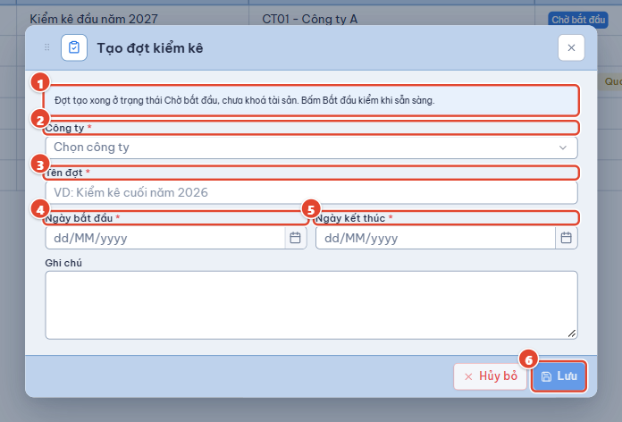
- Câu nhắc: đợt tạo xong ở trạng thái Chờ bắt đầu và chưa khoá tài sản.
- Công ty (bắt buộc). Sau khi tạo, không đổi được công ty của đợt.
- Tên đợt (bắt buộc), ví dụ "Kiểm kê cuối năm 2026".
- Ngày bắt đầu (bắt buộc). Được chọn ngày đã qua.
- Ngày kết thúc (bắt buộc). Không được trước hôm nay và không được trước ngày bắt đầu.
- Lưu: chỉ bấm được khi đã chọn công ty, có tên đợt và hai ngày hợp lệ. Lưu xong, màn hình chuyển thẳng vào trang chi tiết của đợt mới.
Chặn trùng ngày. Một công ty không được có hai đợt (Chờ bắt đầu hoặc Đang mở) có khoảng ngày chồng lên nhau; hai khoảng chỉ chạm nhau ở ngày đầu hoặc ngày cuối cũng tính là trùng. Đợt đã đóng hoặc đã huỷ không tính. Khi trùng, hệ thống báo:
Nếu công ty đang có một đợt mở, hộp tạo đợt nhắc: "Công ty này đang có đợt kiểm kê mở. Vẫn tạo được đợt mới nếu không trùng ngày, nhưng chỉ Bắt đầu kiểm được sau khi đóng đợt đang mở."
3.3. Bốn trạng thái của đợt
| Trạng thái | Nghĩa | Làm được gì |
|---|---|---|
| Chờ bắt đầu | Đã tạo, chưa kiểm. Tài sản chưa bị khoá. | Sửa đợt, Huỷ đợt, Bắt đầu kiểm. |
| Đang mở | Đang kiểm. Toàn bộ tài sản bị khoá. | Đi kiểm trên app, xác nhận phiếu, xem tiến độ, Đóng đợt. |
| Đã đóng | Kiểm xong. Không mở lại được. | Chỉ xem và lấy báo cáo. |
| Đã huỷ | Bỏ đợt khi chưa bắt đầu. Không dùng lại được. | Không làm gì thêm; muốn kiểm thì tạo đợt mới. |
3.4. Đợt Chờ bắt đầu: Sửa, Huỷ, Bắt đầu kiểm
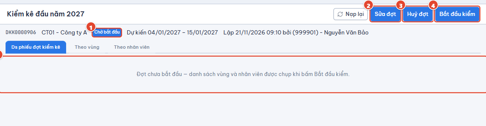
- Dòng thông tin: mã đợt, công ty, trạng thái, khoảng ngày dự kiến, lúc lập và người lập.
- Sửa đợt: sửa tên, ghi chú và hai ngày (cùng luật ngày như lúc tạo). Không đổi được công ty.
- Huỷ đợt: hỏi lại "Đợt chuyển sang Đã huỷ và không dùng lại được; muốn kiểm thì tạo đợt mới." rồi mới huỷ.
- Bắt đầu kiểm: mở đợt và khoá tài sản (xem Hình 4).
- Ba tab của đợt còn trống, vì danh sách vùng và nhân viên chỉ được chụp lúc bấm Bắt đầu kiểm.
Ba nút chỉ hiện với hành chính, và chỉ khi đợt còn Chờ bắt đầu. Nếu người khác vừa bắt đầu hoặc huỷ đợt, hệ thống báo đợt không còn ở trạng thái Chờ bắt đầu và nhắc tải lại trang.
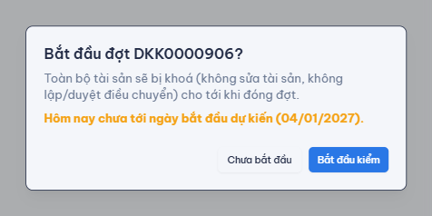
Bấm Bắt đầu kiểm trong hộp này thì:
- Đợt chuyển sang Đang mở.
- Toàn bộ tài sản của mọi công ty bị khoá (không thêm, sửa, xoá tài sản, không đặt Chung / Riêng, không lập hay duyệt điều chuyển) cho tới khi đóng hết các đợt đang mở. Xem mục 4.
- Hệ thống chụp lại danh sách vùng của công ty và danh sách người đang giữ đồ Riêng kèm số đồ của từng người. Hai danh sách này là việc phải làm của đợt; vùng hay người phát sinh sau đó không tự vào đợt.
Hộp có thêm dòng nhắc màu cam nếu hôm nay chưa tới ngày bắt đầu dự kiến (vẫn bắt đầu được), hoặc nếu đã qua ngày kết thúc dự kiến (nên Sửa đợt trước). Mỗi công ty chỉ có một đợt Đang mở; nếu công ty đã có đợt mở, hệ thống báo "Công ty {mã} đang có đợt kiểm kê mở, hãy đóng đợt đó trước."
3.5. Chi tiết đợt: ô tổng và 3 tab
Khi đợt Đang mở hoặc Đã đóng, trang chi tiết có 4 ô tổng và 3 tab.
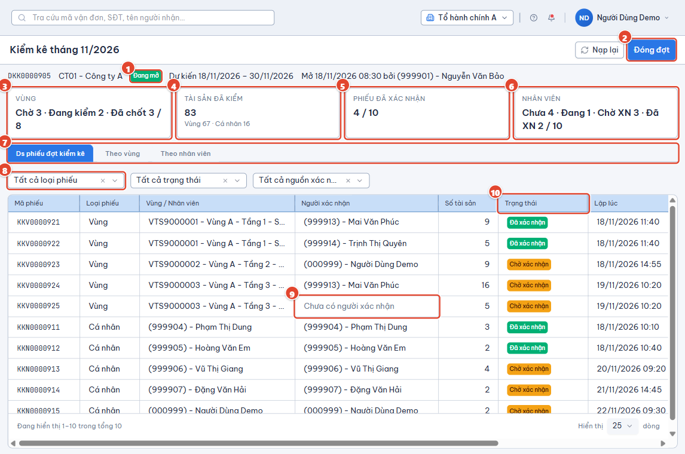
- Dòng thông tin: mã đợt, công ty, trạng thái, khoảng ngày dự kiến, lúc mở và người mở. Đợt đã đóng có thêm lúc đóng, và nhãn "Đã đóng khi còn dở" nếu có.
- Đóng đợt: chỉ hiện với hành chính khi đợt Đang mở. Xem mục 3.7.
- Vùng: số vùng Chờ kiểm · Đang kiểm · Đã chốt / tổng số vùng của đợt.
- Tài sản đã kiểm: tổng số tài sản đã ghi nhận; dòng nhỏ tách số đã thêm vào các vùng và số đồ Riêng đã ghi kết quả.
- Phiếu đã xác nhận: số phiếu đã xác nhận / tổng số phiếu (cả phiếu vùng và phiếu cá nhân).
- Nhân viên: số người Chưa kiểm · Đang kiểm · Chờ xác nhận · Đã xác nhận / tổng số người giữ đồ Riêng trong đợt.
- Ba tab: Ds phiếu đợt kiểm kê (mở sẵn), Theo vùng, Theo nhân viên.
- Ba bộ lọc phiếu: loại phiếu (Vùng / Cá nhân), trạng thái (Chờ xác nhận / Đã xác nhận), nguồn xác nhận (Người dùng / Hệ thống).
- Phiếu vùng chưa có người xác nhận, vì nhóm tài sản đó chưa có nhân viên chuyên môn phụ trách. Khi đóng đợt, hệ thống tự xác nhận phiếu này.
- Trạng thái phiếu: Chờ xác nhận, Đã xác nhận, hoặc Hệ thống xác nhận (phiếu được tự xác nhận lúc đóng đợt; cột Xác nhận bởi ghi "Hệ thống").
Tab Ds phiếu đợt kiểm kê chỉ để xem danh sách: bấm vào dòng không mở gì. Các cột còn lại (kéo ngang để xem): Lập lúc, Xác nhận lúc, Xác nhận bởi.
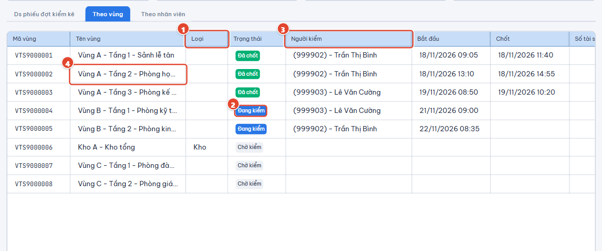
- Loại: ghi "Kho" nếu là vùng kho; vùng thường để trống.
- Trạng thái vùng: Chờ kiểm (chưa ai mở), Đang kiểm (đã có người kiểm), Đã chốt (đã chốt và đã lập phiếu).
- Người kiểm của vùng, kèm giờ bắt đầu, giờ chốt và số tài sản ở các cột bên phải.
- Bấm vào một dòng để xem tài sản đã kiểm trong vùng (Hình 8, mục 3.6).
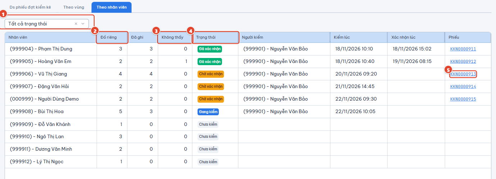
- Lọc theo trạng thái: Chưa kiểm, Đang kiểm, Chờ xác nhận, Đã xác nhận.
- Đồ riêng: số đồ Riêng người đó giữ lúc bắt đầu đợt. Cột Đã ghi bên cạnh là số món đã ghi kết quả.
- Không thấy: số món đã ghi kết quả "Không thấy".
- Trạng thái phần kiểm của người đó. Các cột tiếp theo: người kiểm, lúc kiểm, lúc xác nhận.
- Phiếu: mã phiếu cá nhân, bấm để mở trang chi tiết phiếu.
Bấm vào một dòng để xem đồ Riêng của người đó cùng kết quả kiểm từng món.
3.6. Hộp xem tài sản
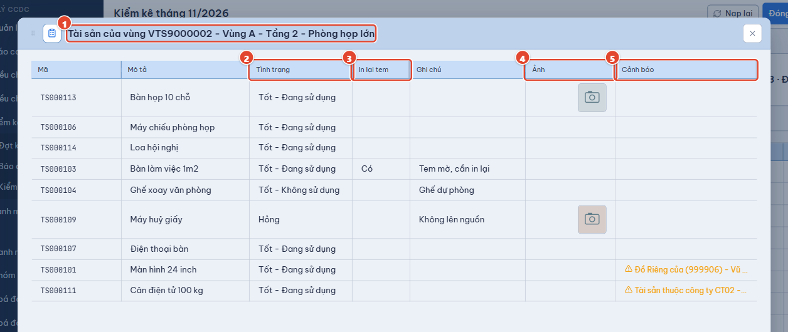
- Tiêu đề: vùng (hoặc nhân viên) đang xem.
- Tình trạng người kiểm ghi nhận: Tốt - Đang sử dụng, Tốt - Không sử dụng, Hỏng…
- In lại tem: "Có" nếu tem mờ, mất, cần in lại.
- Ảnh chụp lúc kiểm (tình trạng Hỏng bắt buộc có ảnh).
- Cảnh báo lúc thêm vào vùng: đồ Riêng của người khác, tài sản công ty khác, hoặc tài sản đang ghi thuộc vùng khác.
Hộp của nhân viên có thêm cột Kết quả (Có / Không thấy) và không có cột Cảnh báo. Hộp chỉ để xem, không sửa được gì.
3.7. Đóng đợt
Hành chính bấm Đóng đợt ở trang chi tiết đợt. Hệ thống tải lại số liệu mới nhất rồi mới hỏi xác nhận.
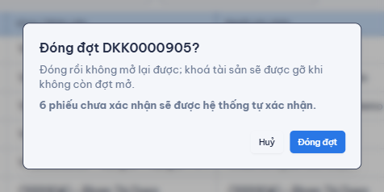
Nếu đợt còn việc dở (vùng chưa chốt, hoặc nhân viên còn Chưa kiểm / Đang kiểm), hệ thống không đóng ngay mà hiện hộp cảnh báo đỏ:
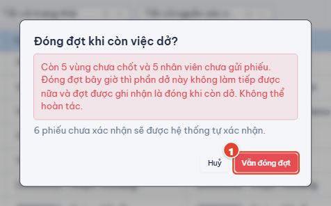
- Vẫn đóng đợt: đóng dù còn dở. Phần dở không làm tiếp được nữa, đợt được ghi nhận "đóng khi còn dở", không hoàn tác được. Bấm Huỷ để quay lại kiểm tiếp.
Khi đợt đóng, trong cùng một lần:
- Đợt chuyển sang Đã đóng và không mở lại được.
- Mọi phiếu còn Chờ xác nhận được hệ thống tự xác nhận. Nguồn xác nhận ghi "Hệ thống"; người được giao vẫn được giữ trên phiếu để biết ai đã không xác nhận.
- Nhân viên đang Chờ xác nhận chuyển sang Đã xác nhận. Nhân viên còn Chưa kiểm / Đang kiểm giữ nguyên.
- Tài sản được mở khoá nếu không còn đợt nào khác đang mở.
Thông báo sau khi đóng: "Đã đóng đợt kiểm kê. Hệ thống đã tự xác nhận N phiếu."
3.8. Cảnh báo Quá hạn
Nhãn Quá hạn hiện cạnh trạng thái khi đợt Đang mở và hôm nay đã qua ngày kết thúc dự kiến. Đúng ngày kết thúc thì chưa tính là quá hạn. Nhãn chỉ để nhắc: đợt không tự đóng, vẫn kiểm tiếp được cho tới khi hành chính bấm Đóng đợt.
4. Khi đang kiểm kê: tài sản bị khoá
Từ lúc một đợt được bấm Bắt đầu kiểm tới lúc mọi đợt đang mở đều đã đóng, toàn bộ tài sản của mọi công ty bị khoá, để số liệu không thay đổi trong lúc đang đếm. Một công ty đang kiểm là đủ để khoá tài sản của tất cả các công ty.
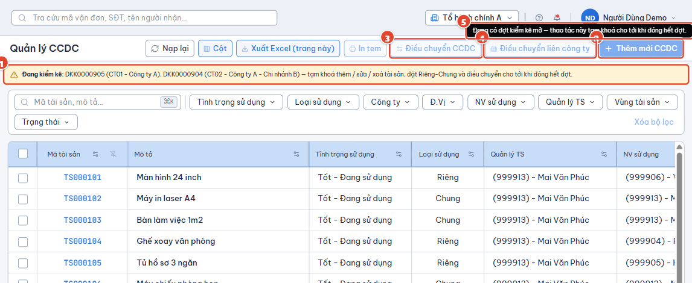
- Băng báo vàng "Đang kiểm kê": liệt kê các đợt đang mở và công ty, nhắc rằng thêm / sửa / xoá tài sản, đặt Riêng-Chung và điều chuyển đang tạm khoá cho tới khi đóng hết đợt.
- Thêm mới CCDC bị xám.
- Điều chuyển CCDC bị xám.
- Điều chuyển liên công ty bị xám.
- Rê chuột vào nút xám để xem lý do: "Đang có đợt kiểm kê mở — thao tác này tạm khoá cho tới khi đóng hết đợt."
Những chỗ khác cũng bị khoá theo cùng cách:
- Nút Đặt là Chung / Đặt là Riêng trên màn Quản lý CCDC, và nút Lưu trong hộp chi tiết tài sản.
- Các màn Điều chuyển CCDC và Điều chuyển LCT (Chờ duyệt, Đã duyệt, Từ chối, Tra cứu tất cả) có cùng băng báo; trong phiếu điều chuyển, các nút Trình / Duyệt / Từ chối / Huỷ bị xám.
- Màn Vùng tài sản: không xoá được và không đổi được công ty của một vùng đang nằm trong đợt mở.
Băng báo có thể hiện chậm tối đa khoảng 1 phút sau khi đợt được bắt đầu. Nếu ai đó thao tác đúng lúc đó, hệ thống vẫn chặn và báo "Đang có đợt kiểm kê mở (…). Thao tác này tạm khoá cho tới khi đóng hết đợt."
5. Menu Báo cáo kiểm kê
Xem kết quả của một hoặc nhiều đợt cùng lúc, chia thành 5 tab. Menu nằm ở Kiểm kê CCDC › Báo cáo kiểm kê, dành cho người có quyền Xem kiểm kê. Báo cáo chỉ để xem và xuất Excel, không sửa được gì.
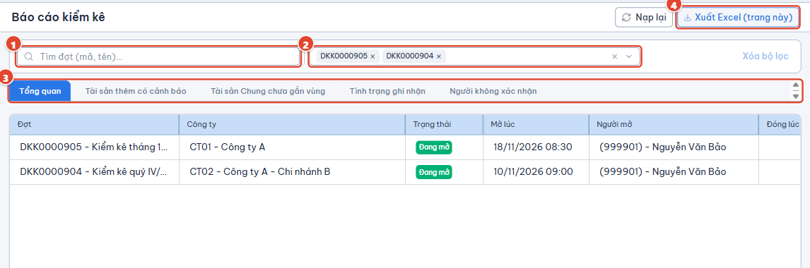
- Ô tìm đợt: thu hẹp danh sách đợt trong ô chọn bên cạnh theo mã hoặc tên.
- Ô chọn đợt: chọn một hoặc nhiều đợt để xem. Xem mục 5.1.
- Năm tab báo cáo. Xem mục 5.2.
- Xuất Excel (trang này). Xem mục 5.3.
5.1. Chọn đợt
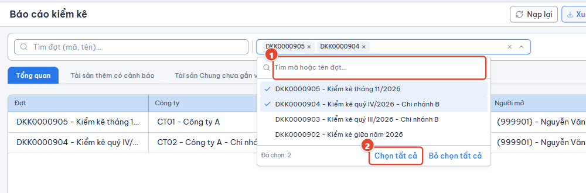
- Ô tìm trong danh sách: gõ mã hoặc tên đợt.
- Chọn tất cả / Bỏ chọn tất cả. Dấu tích cho biết đợt đang được chọn.
- Danh sách chỉ có đợt Đang mở và Đã đóng (đợt Chờ bắt đầu và Đã huỷ chưa có dữ liệu để báo cáo). Đợt mới nhất nằm trên cùng.
- Khi vào trang, hệ thống chọn sẵn mọi đợt đang mở. Không có đợt nào mở thì không chọn gì, và trang nhắc "Chọn ít nhất một đợt kiểm kê để xem báo cáo."
- Chọn tối đa 20 đợt một lần. Nút Xóa bộ lọc đưa lựa chọn về mặc định.
5.2. Năm tab báo cáo
| Tab | Cho biết gì |
|---|---|
| Tổng quan | Mỗi đợt một dòng: công ty, trạng thái, mở / đóng lúc nào, ai mở / đóng, số vùng đã chốt / tổng, số nhân viên chờ xác nhận / đã xác nhận / tổng, phiếu đã xác nhận / tổng, số tài sản đã ghi, số phiếu hệ thống tự xác nhận, có đóng khi còn dở không. |
| Tài sản thêm có cảnh báo | Tài sản người kiểm đã thêm vào vùng dù có cảnh báo: đồ Riêng của người khác, tài sản công ty khác, tài sản đang ghi thuộc vùng khác. Dùng để rà lại sau đợt. |
| Tài sản Chung chưa gắn vùng | Đồ Chung và đồ Kho của các công ty trong các đợt đã chọn mà không có trong vùng nào của các đợt đó (và các đợt đang mở). Không tính tài sản Mất, Đã thanh lý, Không theo dõi. Đây là danh sách đồ "không ai kiểm tới". |
| Tình trạng ghi nhận | Tài sản theo một loại tình trạng: Hỏng (mặc định), Không thấy, Cần in tem, Tốt không dùng, Chờ thanh lý. Gồm cả tài sản trong vùng lẫn đồ Riêng của nhân viên; "Không thấy" chỉ có ở đồ Riêng. |
| Người không xác nhận | Những người được giao xác nhận phiếu nhưng không xác nhận, để hệ thống phải tự xác nhận lúc đóng đợt: số phiếu, chia phiếu vùng / phiếu cá nhân, mã các phiếu. |
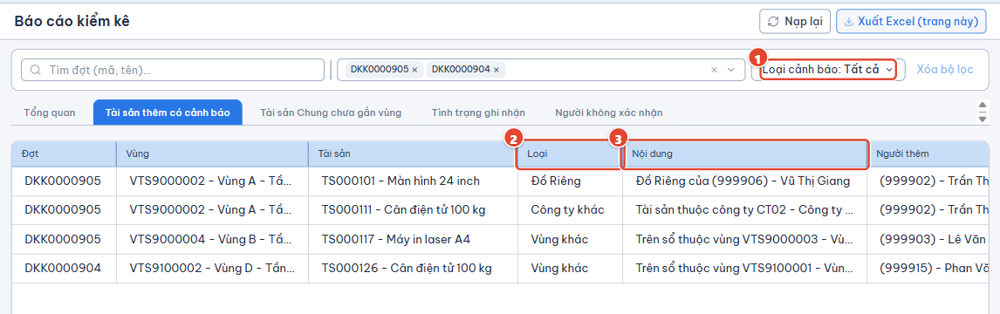
- Lọc Loại cảnh báo: Tất cả, Đồ Riêng, Công ty khác, Vùng khác.
- Loại cảnh báo của từng tài sản.
- Nội dung cảnh báo người kiểm đã thấy lúc thêm. Các cột bên phải: người thêm, giờ thêm.
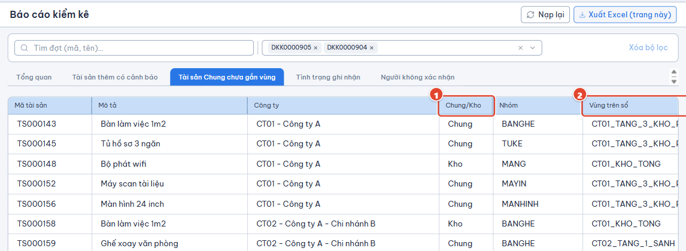
- Chung/Kho: loại sử dụng của tài sản.
- Vùng trên sổ: vị trí đang ghi trên sổ tài sản. Cột Người giữ bên phải cho biết ai đang giữ.
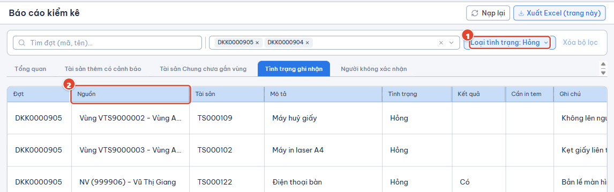
- Loại tình trạng (bắt buộc chọn một loại; mặc định Hỏng).
- Nguồn: ghi nhận từ vùng nào hay từ phần kiểm của nhân viên nào. Các cột bên phải: kết quả, cần in tem, ghi chú, ảnh.
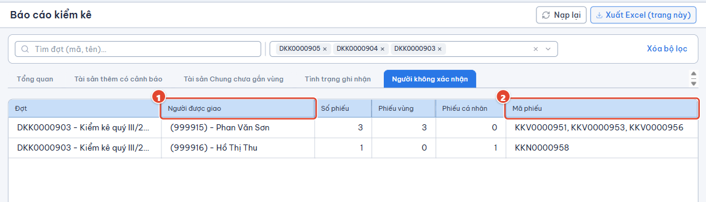
- Người được giao xác nhận mà không xác nhận.
- Mã phiếu do hệ thống tự xác nhận thay người đó.
5.3. Xuất Excel
Nút Xuất Excel (trang này) xuất đúng các dòng đang hiện trên trang của tab đang mở. Báo cáo nhiều trang thì chuyển từng trang rồi xuất. File có tên dạng bao-cao-kiem-ke-…, sheet trùng tên tab. File không chứa ảnh, chỉ ghi số ảnh; cột Mã phiếu xuất đủ mọi mã. Không có dữ liệu thì hệ thống báo "Chưa có dữ liệu để xuất".
6. Menu Kiểm kê của tôi
Ai đăng nhập cũng thấy menu này, và chỉ thấy việc của chính mình. Menu có 2 tab. Khi vào, nếu còn phiếu chờ xác nhận thì mở tab Phiếu cần xác nhận, nếu không thì mở tab Các đợt có tôi.
6.1. Tab Phiếu cần xác nhận
Liệt kê các phiếu mà mình là người xác nhận: phiếu vùng (nếu mình là nhân viên chuyên môn của nhóm tài sản) và phiếu cá nhân (đồ Riêng của chính mình).
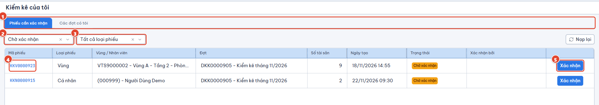
- Hai tab: Phiếu cần xác nhận và Các đợt có tôi.
- Lọc trạng thái: Chờ xác nhận (mặc định), Đã xác nhận, hoặc tất cả.
- Lọc loại phiếu: Vùng, Cá nhân, hoặc tất cả.
- Bấm mã phiếu (hoặc bấm vào dòng) để xem chi tiết phiếu (Hình 20).
- Xác nhận: xác nhận phiếu ngay trên dòng. Nút chỉ có ở phiếu đang Chờ xác nhận.
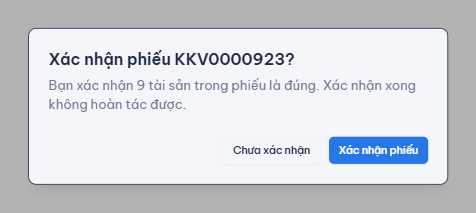
Bấm Xác nhận phiếu là xác nhận cả phiếu một lần: mọi tài sản trong phiếu là đúng. Không bỏ tích từng tài sản được, và xác nhận xong không hoàn tác được. Thấy sai thì báo hành chính trước khi xác nhận.
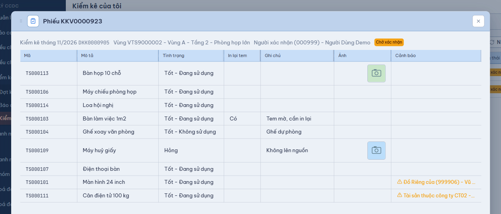
Hộp này chỉ để xem, không có nút Xác nhận. Đầu hộp ghi đợt, vùng (hoặc nhân viên), người xác nhận và trạng thái; phiếu đã xác nhận ghi thêm lúc nào, bởi ai, hoặc "Hệ thống tự xác nhận khi đóng đợt". Bảng tài sản giống mục 3.6.
6.2. Tab Các đợt có tôi
Liệt kê các đợt mà lúc bấm Bắt đầu kiểm mình đang giữ đồ Riêng, để biết đồ của mình đã được kiểm chưa.
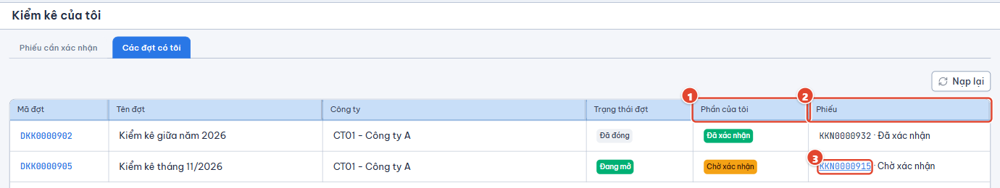
- Phần của tôi: Chưa kiểm, Đang kiểm, Chờ xác nhận, Đã xác nhận.
- Phiếu: mã phiếu cá nhân và trạng thái phiếu.
- Phiếu đang chờ thì mã phiếu là đường dẫn, bấm để mở trang chi tiết phiếu và xác nhận.
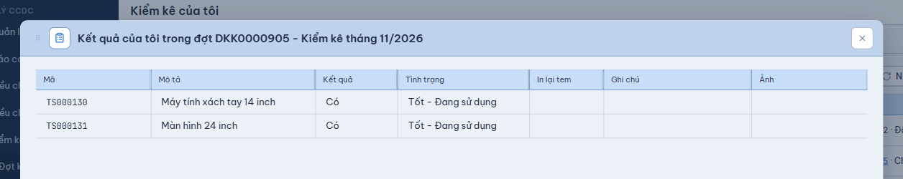
7. Màn tài sản: đánh dấu Chung / Riêng
Loại sử dụng (Chung / Riêng / Kho, xem mục 1.2) quyết định tài sản được kiểm theo vùng hay theo nhân viên, nên cần đánh dấu đúng trước khi bắt đầu một đợt. Chỉ hành chính đổi được loại sử dụng, và không đổi được trong lúc có đợt đang mở.
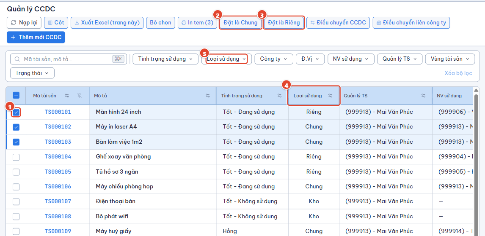
- Tích chọn các dòng cần đổi (ô tích này dùng chung với In tem).
- Đặt là Chung: chuyển các tài sản đã chọn sang Chung.
- Đặt là Riêng: chuyển các tài sản đã chọn sang Riêng.
- Cột Loại sử dụng: Riêng, Chung hoặc Kho.
- Bộ lọc Loại sử dụng: lọc ra đồ Riêng, Chung hoặc Kho để rà soát.
- Tài sản đang ở kho luôn là Kho, do hệ thống tự đặt; chọn nhầm tài sản kho thì hệ thống bỏ qua món đó và báo dạng "Đã đặt N tài sản là Chung. M tài sản không đổi được", các món không đổi được vẫn được tích lại trên lưới.
- Sửa từng tài sản: trong hộp chi tiết tài sản có ô Loại sử dụng. Tài sản đang ở người thì bắt buộc chọn Riêng hoặc Chung; tài sản ở kho thì ô này chỉ đọc "Kho". Form Thêm mới không có ô này (tài sản mới vào kho).
- Điều chuyển từ kho cho người dùng: mỗi dòng của phiếu điều chuyển phải chọn Riêng hoặc Chung (có nút chọn nhanh Tất cả Riêng / Tất cả Chung). Để trống thì không lưu được phiếu.
8. Đi kiểm trên app điện thoại (tóm tắt)
Việc đi kiểm thực tế làm trên app điện thoại; web không có màn đi kiểm. Mục này chỉ tóm tắt để nắm luồng. Cách dùng app có tài liệu riêng.
Màn đầu của app cho biết: các đợt đang mở mà mình được đi kiểm, số đồ Riêng mình đang giữ, và số phiếu đang chờ mình xác nhận. Đợt còn Chờ bắt đầu không hiện trên app.
Kiểm theo vùng
- Người đi kiểm chọn một vùng và bắt đầu kiểm. Từ lúc đó họ là "người kiểm" của vùng. Chỉ hành chính mới nhận lại được một vùng đang có người khác kiểm.
- Quét mã từng tài sản có mặt trong vùng để thêm vào vùng. App cảnh báo khi quét phải: đồ Riêng của một người, tài sản của công ty khác, hoặc tài sản đang ghi thuộc vùng khác. Người kiểm phải xác nhận mới thêm được. Những tài sản này hiện ở tab "Tài sản thêm có cảnh báo" của báo cáo.
- Ghi tình trạng, đánh dấu cần in lại tem, ghi chú, chụp ảnh. Tình trạng Hỏng bắt buộc có ảnh. Thêm nhầm thì bỏ tài sản khỏi vùng.
- Xem lại rồi chốt vùng. Hệ thống lập phiếu vùng, chia theo nhân viên chuyên môn quản lý nhóm tài sản, và gửi phiếu cho từng người xác nhận.
Kiểm theo nhân viên
- Người đi kiểm chọn một nhân viên. Hệ thống lập sẵn danh sách đồ Riêng của người đó.
- Quét mã từng món: món đúng là đồ của người đó được ghi ngay là "Có", tình trạng tốt, đang dùng. Món không tìm thấy thì ghi "Không thấy". Có thể sửa tình trạng, đánh dấu in tem, ghi chú, chụp ảnh.
- Ghi đủ mọi món thì gửi. Hệ thống lập phiếu cá nhân, người xác nhận là chính nhân viên đó. Phần của nhân viên chuyển sang "Chờ xác nhận".
- Nhân viên xác nhận phiếu của mình trên web (mục 6.1) hoặc trên app. Hành chính có đồ Riêng thì được tự kiểm và tự xác nhận phần của mình.
9. Câu hỏi thường gặp
Vì sao tôi không sửa được tài sản, nút Lưu hay nút Điều chuyển bị xám?
Đang có ít nhất một đợt kiểm kê Đang mở, ở bất kỳ công ty nào. Rê chuột vào nút xám sẽ thấy lý do. Tài sản mở khoá khi mọi đợt đang mở đều đã đóng. Xem mục 4.
Phiếu không ai xác nhận thì sao?
Khi hành chính đóng đợt, mọi phiếu còn chờ được hệ thống tự xác nhận. Phiếu đó hiện nhãn "Hệ thống xác nhận", cột Xác nhận bởi ghi "Hệ thống". Người được giao vẫn được giữ trên phiếu, nên tab Người không xác nhận của báo cáo liệt kê được ai đã không xác nhận.
Có phiếu ghi "Chưa có người xác nhận" là sao?
Khi chốt vùng, tài sản thuộc nhóm chưa có nhân viên chuyên môn phụ trách sẽ vào một phiếu không có người xác nhận. Hiện chưa có màn giao lại người xác nhận cho phiếu này; khi đóng đợt, hệ thống tự xác nhận nó như mọi phiếu còn chờ.
Còn vùng chưa chốt, còn nhân viên chưa kiểm thì có đóng đợt được không?
Được, nhưng phải bấm qua hộp cảnh báo đỏ Vẫn đóng đợt. Phần dở không làm tiếp được nữa, đợt được ghi nhận là "đóng khi còn dở", và không hoàn tác được. Xem mục 3.7.
Đợt quá ngày kết thúc thì có tự đóng không?
Không. Đợt chỉ hiện nhãn Quá hạn để nhắc; vẫn kiểm tiếp được cho tới khi hành chính bấm Đóng đợt.
Một công ty có hai đợt cùng lúc được không?
Tạo được nhiều đợt nếu khoảng ngày không trùng nhau, nhưng mỗi công ty chỉ có một đợt Đang mở tại một thời điểm. Muốn bắt đầu đợt sau thì phải đóng đợt đang mở trước.
Lỡ huỷ đợt, hoặc lỡ xác nhận phiếu, có lấy lại được không?
Không. Đợt đã huỷ không dùng lại được, muốn kiểm thì tạo đợt mới. Phiếu đã xác nhận không hoàn tác được.
Vì sao tôi không thấy đợt nào ở tab "Các đợt có tôi"?
Tab này chỉ liệt kê đợt mà lúc bấm Bắt đầu kiểm bạn đang giữ đồ Riêng. Nhân viên chuyên môn chỉ nhận phiếu vùng sẽ thấy phiếu ở tab Phiếu cần xác nhận, không thấy đợt ở tab này.
Muốn xem tài sản trong một phiếu ở trang chi tiết đợt thì bấm vào đâu?
Tab "Ds phiếu đợt kiểm kê" chỉ liệt kê phiếu, bấm vào dòng không mở gì. Để xem tài sản, dùng tab Theo vùng hoặc Theo nhân viên và bấm vào dòng. Ở tab Theo nhân viên, mã phiếu là đường dẫn mở trang chi tiết phiếu.
Xuất Excel ở báo cáo sao không ra đủ mọi dòng?
Nút Xuất Excel (trang này) chỉ xuất các dòng đang hiện trên trang. Báo cáo nhiều trang thì chuyển từng trang rồi xuất. File Excel không chứa ảnh, chỉ ghi số ảnh.